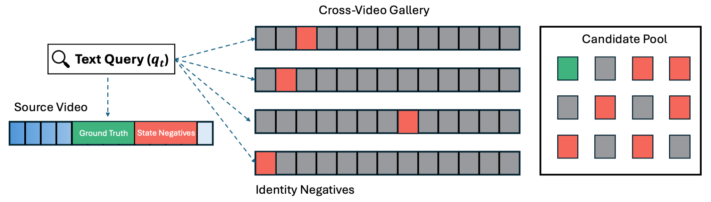
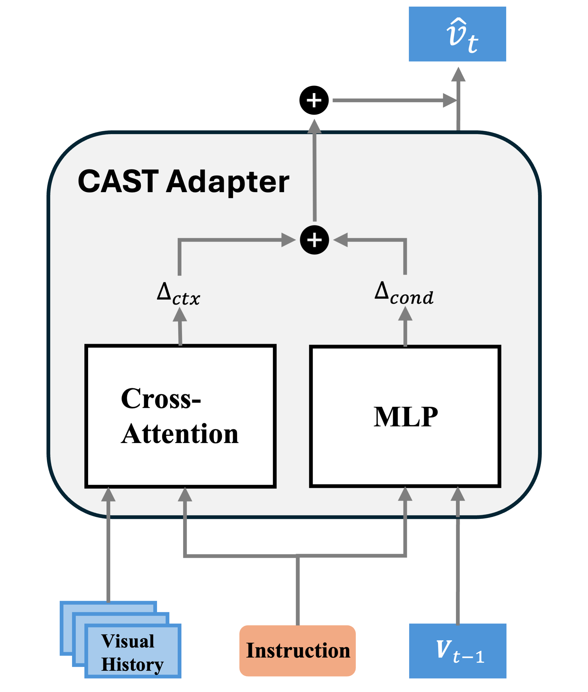
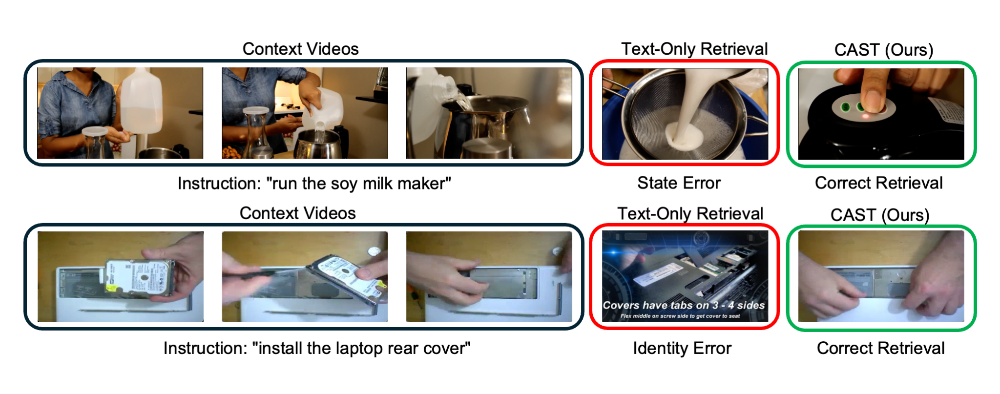
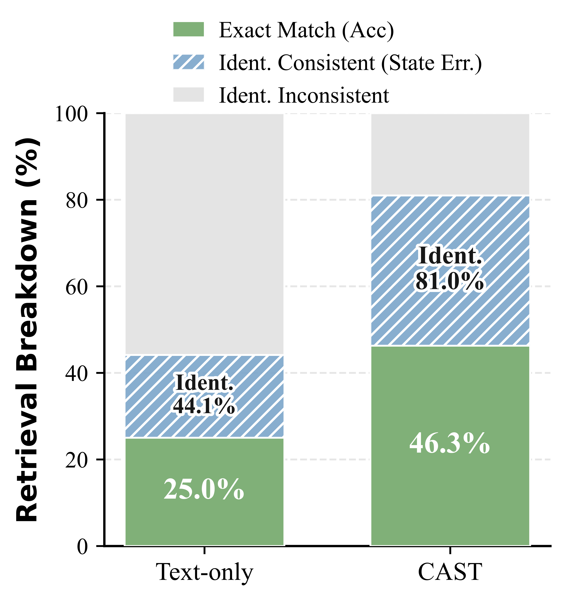
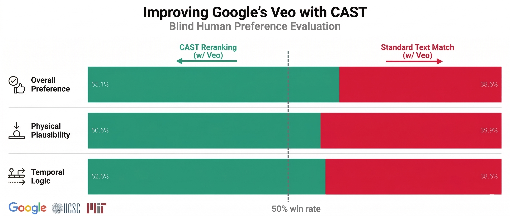

Benchmark the real failure mode
CVR builds negatives that are close in language and appearance but wrong in how the scene should evolve. This turns retrieval into a test of sequential understanding.
Modeling Visual State Transitions for Consistent Video Retrieval. CAST introduces Consistent Video Retrieval (CVR), a benchmark that isolates state and identity failures in multi-step activities, together with a lightweight adapter that learns action-conditioned state transitions in frozen video-language embedding space.
CAST studies retrieval in settings where actions happen in sequence and every step changes the world. The paper introduces CVR, a benchmark that turns multi-step activities into consistency-sensitive retrieval questions, and proposes a compact State Transition Adapter that predicts the next visual state through residual transition modeling. Instead of relying on heavier cross-encoders, CAST operates on top of a frozen backbone, predicts a next-state embedding from visual history and the current instruction, and reuses the same inference signals for retrieval and generation guidance.
CVR builds negatives that are close in language and appearance but wrong in how the scene should evolve. This turns retrieval into a test of sequential understanding.
CAST keeps the video-language backbone frozen and predicts the next-state embedding from the anchor state, current instruction, and visual history through a lightweight residual adapter.
The same learned transition score can guide candidate selection for video generation, improving both automatic evaluation and human preference.

The benchmark uses step-level clips from YouCook2, CrossTask, and COIN. Query clips define the current context, the natural-language instruction specifies the desired next step, and negatives are sampled to violate either state changes or object identity while remaining semantically plausible.
YouCook2 uses the official train split for training and CVR evaluation on val. COIN uses official train for training and CVR evaluation on test. CrossTask uses a video-disjoint 80/20 split with random seed 42.
Each query is evaluated against 10 candidates: 1 ground-truth clip, up to 3 hard
state negatives, up to 3 hard identity negatives, and easy negatives to fill the
remaining slots. The context history uses up to the previous L=5 clips.
In the main experiments, each clip is represented by mean-pooled CLIP ViT-B/32
features from 3 uniformly sampled frames. CAST uses a frozen backbone and is
trained with AdamW, a context window of L=5, and dataset-specific
training epochs.
Final evaluation-set size for each dataset under the fixed 1-vs-9 ranking protocol.
| Dataset | Split Protocol | #Videos | #Step-Clips | #Queries |
|---|---|---|---|---|
| YouCook2 | official train; CVR eval on val | 414 | 3,179 | 2,765 |
| COIN | official train; CVR eval on test | 2,134 | 6,241 | 4,107 |
| CrossTask | video-disjoint 80/20 split | 509 | 2,731 | 2,222 |

CAST is a lightweight query-side adapter on top of a frozen backbone. Given the anchor state vt-1, the instruction qt, and the visual history Ht, it predicts the next-state embedding v̂t through a residual update.
CAST predicts v̂t = φ(vt-1 + Δ(vt-1, qt, Ht)), where Δ = Δcond + Δctx. The instruction-conditioned branch uses MLPcond([ft(qt); vt-1]), while the context branch applies cross-attention over Ht followed by MLPctx.
At inference time, CAST keeps the gallery fixed and scores each candidate with three signals: semantic alignment A, visual continuity B, and predicted future-state compatibility C. The final score uses the full ensemble S(q,c)=A(q,c)+wvB(q,c)+wpC(q,c).
The backbone encoder remains frozen, and only the CAST adapter is optimized. This preserves the scalability of standard retrieval pipelines while adding context-aware next-state prediction on the query side.

Good examples here are the cases where semantic matching looks reasonable but the retrieved clip violates the intended next state or the identity of the manipulated object.

If you want the project page to tell a complete story, this figure is useful for showing how the generation-reranking study was judged beyond automatic scores.
These cases illustrate typical CVR failure modes for context-free retrieval: the retrieved clip can remain semantically related while still violating the expected temporal state or the manipulated object identity.
CAST provides the strongest overall trade-off across datasets and diagnostic metrics, with especially clear gains on state-sensitive retrieval.
| Method | Context Modeling | YouCook2 | COIN | CrossTask | Diagnostic | ||||
|---|---|---|---|---|---|---|---|---|---|
| Acc. | MnR | Acc. | MnR | Acc. | MnR | State | Ident. | ||
| CLIP Baseline | Context-Free | 25.03 | 3.60 | 14.10 | 3.91 | 16.83 | 4.15 | 45.52 | 28.90 |
| Late Fusion (Heuristic) | Fixed Weighting | 31.10 | 2.56 | 17.85 | 3.28 | 22.05 | 2.86 | 28.69 | 68.29 |
| Late Fusion (Learned) | Learned Weighting | 36.60 | 2.53 | 44.66 | 2.11 | 25.52 | 2.86 | 40.06 | 76.06 |
| Early Fusion | Feature Concat. | 35.99 | 2.28 | 15.12 | 2.60 | 35.29 | 2.36 | 31.14 | 83.59 |
| CAST (Ours) | State Transition | 44.77 | 2.15 | 40.47 | 2.16 | 47.39 | 2.14 | 53.81 | 74.67 |
CAST consistently improves over the corresponding zero-shot baseline while operating in the same frozen native vision-language embedding space for each backbone.
| Backbone | Setting | YouCook2 | COIN | CrossTask | Diagnostic | ||||
|---|---|---|---|---|---|---|---|---|---|
| Acc. | MnR | Acc. | MnR | Acc. | MnR | State | Ident. | ||
| Category I: Video Foundation Models | |||||||||
| InternVideo2-1B | Zero-Shot | 36.75 | 2.59 | 17.99 | 3.36 | 20.61 | 3.31 | 65.70 | 30.85 |
| InternVideo2-1B | + CAST | 71.68 | 1.48 | 51.03 | 1.90 | 64.36 | 1.71 | 75.43 | 77.77 |
| VideoPrism-B | Zero-Shot | 47.45 | 2.13 | 17.60 | 3.32 | 20.25 | 3.24 | 68.38 | 33.68 |
| VideoPrism-B | + CAST | 75.59 | 1.38 | 51.64 | 1.90 | 62.11 | 1.74 | 76.92 | 77.66 |
| Category II: Multimodal Embedding Models | |||||||||
| GME-Qwen2-VL-2B | Zero-Shot | 29.62 | 3.10 | 17.17 | 3.44 | 19.40 | 3.61 | 56.31 | 29.73 |
| GME-Qwen2-VL-2B | + CAST | 54.39 | 1.95 | 45.68 | 2.05 | 52.43 | 2.04 | 67.20 | 72.28 |
| Qwen3-VL-Embedding-2B | Zero-Shot | 33.45 | 2.89 | 17.73 | 3.50 | 19.44 | 3.56 | 58.44 | 29.79 |
| Qwen3-VL-Embedding-2B | + CAST | 56.64 | 1.85 | 44.87 | 2.09 | 48.96 | 2.09 | 66.18 | 69.11 |
With CLIP ViT-B/32 fixed, CAST reaches 44.77 Acc. on YouCook2 and 47.39 on CrossTask, while the learned late-fusion baseline is strongest only on COIN (44.66). This matches the paper's conclusion that scalar aggregation can exploit visual inertia on COIN but does not generalize to larger state changes.
The same adapter transfers across InternVideo2, VideoPrism, GME-Qwen2-VL-2B, and Qwen3-VL-Embedding-2B. Across all four backbones, CAST improves both retrieval accuracy and the diagnostic state / identity metrics without changing the frozen backbone encoders.
YouCook2 validation benchmark. Residual modeling outperforms direct target prediction, and the dual-path CAST design improves over simple early fusion.
| Fusion | Target | Acc. | State | Ident. |
|---|---|---|---|---|
| Early (Concat) | Direct (v̂t) | 35.99 | 38.92 | 83.58 |
| Early (Concat) | Residual (Δ) | 38.95 | 43.51 | 81.99 |
| CAST (Ours) | Residual (Δ) | 44.77 | 51.03 | 78.48 |
YouCook2 validation benchmark. The full ensemble offers the best balance between state discrimination and identity preservation.
| Inference Strategy | Acc. | Ident. | State |
|---|---|---|---|
| A. Text Matching (q) | 25.03 | 25.32 | 50.45 |
| B. Visual Continuity (vt-1) | 25.90 | 81.95 | 27.70 |
| C. CAST Prediction (v̂t) | 42.60 | 75.99 | 50.81 |
| Semantic Ensemble (A+C) | 45.46 | 70.38 | 56.71 |
| Full Ensemble (A+B+C) | 44.77 | 78.48 | 51.03 |

This figure complements the inference-decomposition table by showing how CAST shifts top-1 retrieval outcomes toward exact matches and identity-consistent continuations.

The paper reports the largest jump when moving from the context-agnostic setting
L=0 to using only the immediate predecessor L=1, with
performance then largely saturating as longer history is added.
K=4 Veo candidates selected by standard text matching, then evaluates the
selected outputs with a blind human study.

This figure works best as the lead visual for the generation section because it summarizes the main downstream result at a glance: overall preference, physical plausibility, and temporal logic all favor CAST-guided selection over standard text-only matching.
The study samples 300 prompts from the YouCook2 validation benchmark. Standard text matching and CAST reranking each choose one video from the same candidate pool.
Blind human evaluation on the prompts where the two methods select different candidates.
| Selection Method | Overall Preference | Physical Plausibility | Temporal Logic |
|---|---|---|---|
| Standard Text Match | 38.6% | 39.9% | 38.6% |
| CAST Reranking | 55.1% | 50.6% | 52.5% |
| Human Tie | 6.3% | 9.5% | 8.9% |
@misc{liu2026castmodelingvisualstate,
title={CAST: Modeling Visual State Transitions for Consistent Video Retrieval},
author={Yanqing Liu and Yingcheng Liu and Fanghong Dong and Budianto Budianto and Cihang Xie and Yan Jiao},
year={2026},
eprint={2603.08648},
archivePrefix={arXiv},
primaryClass={cs.CV},
url={https://arxiv.org/abs/2603.08648},
}